The next logical step would usually be eye inspection of light curves and radial velocity curves. PHOEBE enables you to plot experimental curves in a separate window, which you access by clicking on the Plot LC button on the button box for light curves and Plot RV button for radial velocity curves.
Let us start with light curves. Click on the Plot LC button on the button-box.
Figure 10:
The light curves plotting window.
|
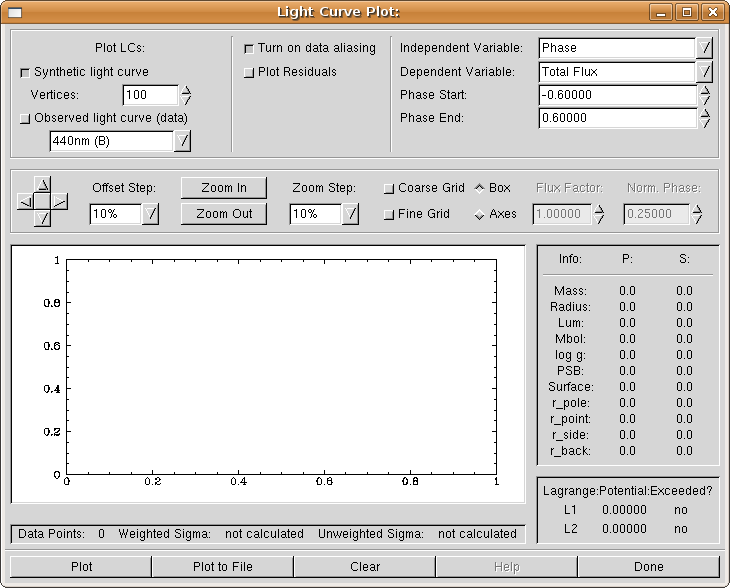
|
The top left part of the LC plotting window (Fig. 10) is used to select what it is we want plotted. Synthetic light curves are computed from theory, based on the current palette of physical parameters. Experimental light curves are taken from our input files. You may choose which experimental curve to plot by selecting its photometric filter; all PHOEBE operations are in fact identified with their filter names rather than filenames.
The resolution of a synthetic light curve is defined by the number of vertexes that we use for plotting. This value is held by an entry labelled Vertexes. If we have steep and narrow eclipses, we need finer resolution, especially in eclipse regions. The number of vertexes defaults to 100, but sometimes this does not suffice for accurate inspections. Try setting it to 300 for the time being.
The top right part of the LC plotting window is used to assign the variables of our plot. The independent variable is plotted on x-axis and the dependent variable is plotted on y-axis.
Independent variable may be time (HJD) or phase. If the independent variable for our plot is phase and what we have in our input files is heliocentric Julian date, then PHOEBE automatically transforms HJD to phase according to the origin of time and period that we set in the main PHOEBE window. This automatic procedure transforms all data points to have phases between 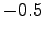 and 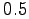. Thus, if we use a plotting range wider than this, the regions outside this interval will contain no data points. That is why PHOEBE allows you to map existing points to the whole region of the plot. This means that a single data point will occur multiple times, wherever the phase of that point is the same. This procedure is referred to as aliasing8. Aliasing is turned on through a Turn on data aliasing switch.
Dependent variable is a bit tricky. It may be:
Magnitude; experimental data is plotted without any transformation if the input files contain magnitudes and is transformed with respect to the Zero Magnitude value from the Data tab to fluxes. Synthetic data is transformed internally with respect to wavelength dependent level parameters (HLAs and CLAs).
Total Flux; this is the most significant quantity for PHOEBE. All calculations are performed with respect to the total flux. By total flux we mean the sum of the flux from the first star, the flux from the second star and the (optional) third light. The units of total flux are arbitrary and are made physically meaningful through level parameters (HLAs and CLAs), as explained in detail in the next section. Experimental data is copied verbatim if the input files contain fluxes and is transformed with respect to the Zero Magnitude value from the Data tab, if they contain magnitudes.
Primary Star Flux; this is the calculated contribution of the primary star. It has no relevant counterpart in experimental data since you cannot isolate the mere contribution of the primary star, so that part of the output is suppressed.
Secondary Star Flux; this is the calculated contribution of the secondary star. This too has no relevant counterpart in experimental data and is thus suppressed.
Normalized flux; this quantity is for your convenience only. Some WD users prefer to adjust the shape of a light curve first and fix the curve level at the very end. This approach seems a bit vague and is deprecated in PHOEBE, but it is still available. The normalized flux is the same as the total flux, except that it is re-normalized to the value given by the Flux Factor (usually 1) at the phase given by Norm. Phase (usually 0.25).
Let's first see whether our period and the origin of time make sense; thus we do not want to plot synthetic light curve, so turn the button Synthetic LC off. The data filter is already set to 440nm (B) in the drop-down list. Note that this list contains only filters that correspond to experimental data curves as defined in the Data tab. Now turn the Experimental light curve switch on. We shall plot the total flux against phase (which is the default). The phase range lets you select what phases you want plotted. This too we shall at this time leave at their current values.
To actually plot the diagram, click on the Plot button. The plot in Fig. 11 appears.
Figure 11:
Plotted 440nm (B) light curve.
|
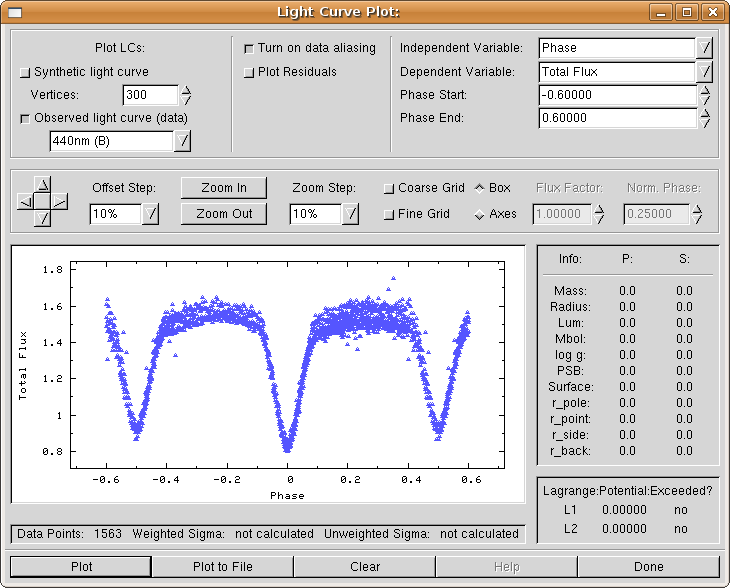
|
You may see that the values for period and the origin of time are pretty much what one would expect, since the minima are at phases 0.0 and 0.5 for all times.
Whenever you click on the Plot button, the plot is displayed; underneath it you may find the number of experimental data points, in our case 1563. The values of weighted and unweighted 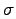s (Sigma) are calculated between experimental data and synthetic light curve, so they are not calculated now that we don't plot a synthetic lightcurve. On the right of the plot you may see the Modeling parameters part of the plotting window; these parameters are calculated from synthetic light curve parameters, so again they are not displayed for our first plot.
Now select the other light curve by choosing 550nm (V) filter instead of 440nm (B).
Let us check how big is the difference between the initial synthetic light curve and experimental data! Turn on synthetic light curve (Synthetic LC switch) and click on Plot again! You are presented with the picture as it Fig. 12.
Figure 12:
Synthetic light curve with plotted 440nm (B) light curve.
|
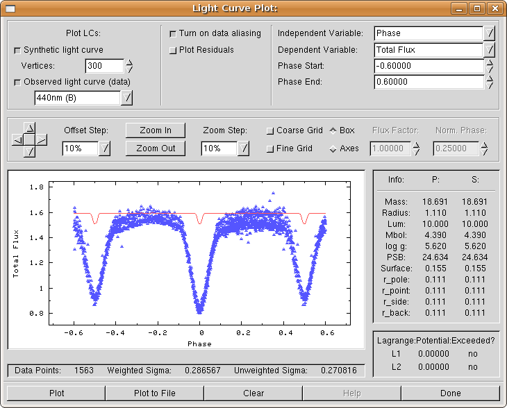
|
Synthetic curve is denoted with a solid red line and experimental data with blue filled circles.
As you may see, the result is disasterous. Standard deviations are now calculated. If individual weights are included in the computation, we obtain the value of
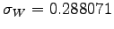 and if they are not included in the computation, we obtain
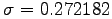. It is 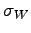 that drives our fit during the minimization scheme, more precisely a convolution of all lightcurve-dependent s.
Synthetic light curve computation now supplies values to the Modeling Parameters window (on the right of the plot itself). Browse through parameters to see what is contained in the output. Abreviations P and S stand for primary and secondary star, respectively. The masses are expressed in units of solar mass, mean radii in units of solar radius. Bolometric magnitude Mbol is in magnitude units and surface gravity potential has standard cgs units g cm/s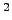. PSB stands for polar surface brightness, Surface is in units of the Roche lobe surface size and all radii informations are given with respect to the semi-major axis. The values you see make no sense, but this is of course to be expected, since parameter values are way wrong. Don't worry about it, they will converge eventually.
The fit between experimental points and the synthetic curve is, for the lack of a better word, terrible. Inspect the other light curve. To get the feeling of discrepancy, you may use the Plot Residuals switch in the mid-upper part of the window. This switch tells PHOEBE to calculate the residuals between synthetic and experimental light curve and to plot them against independent variable. One would hope to get a pure scatter around 0, but this of course cannot yet be the case.
Just above the plot there are plot control arrows and zooming buttons. These controls enable you to move your plot according to your needs. Try zooming in on the eclipse minimum, move the plot around and, all in all, get a feeling of the plotting window as a whole. A button in between the direction arrows is the reset button; clicking on it will restore original plot settings. On the far right of that part of the plotting window you see the grid options and the coordinate options for your plot. The grid (both coarse and fine) is used to easily read out the values from the plot directly. Some users might prefer axes to a boxed coordinate system and this option is supported too.
When you had your share of playing with the LC plotting window and have examined the results, click on the Done button to close the window. Note that you may keep the window open if you prefer - this is usually sound to do when your monitor resolution is very high (16001200 or so).
§
We shall now do much the same for radial velocity curves; open the RV plotting window by clicking on the RV Plot button on the button box.
Figure 13:
The radial velocities plotting window.
|
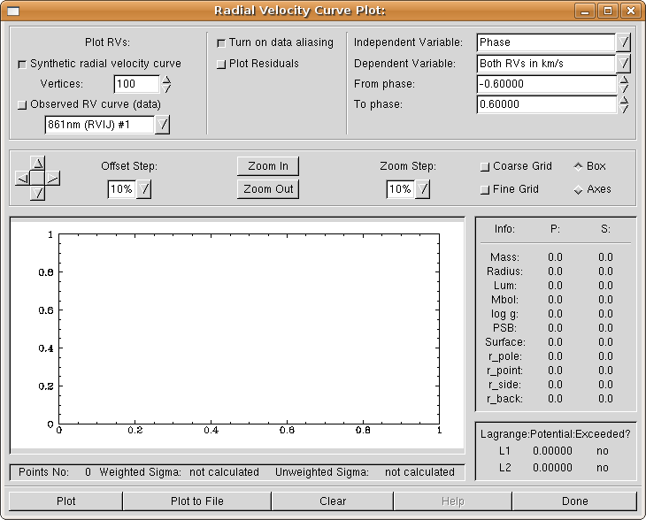
|
The shape and feel of the RV plotting window is much the same as the LC plotting window, although few differences should be stressed. Dependent plot variables are as follows:
Primary (Secondary) RV in km/s; these two variables tell PHOEBE we want our radial velocities in km/s. This is the most common choice.
Both RVs in km/s; same as above, just that both radial velocity curves are plotted on one plot.
Primary (Secondary) Normalized RV; radial velocity curves normalized to orbit, meaning they are transformed to a dimensionless value by multiplying their value in km/s with
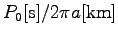. Same is done with experimental data. This means that we expect the value of normalized velocity around if the mass ratio is around  .
.
Primary (Secondary) eclipse proximity corrections; this shows the effects of the eclipse proximity correction on radial velocities in the same dimensionless units as explained above. Experimental data has no counterpart and its output is thus suppressed.
This time leave both experimental data and synthetic RV switches on; if you select the first filter (carrying #1 in its name), set Primary Normalized RV as the dependent variable. If you select the other RV curve, set Secondary Normalized RV as the dependent variable. Try plotting both radial velocity curves on on plot.
Figure 14:
Primary RV curve in km/s; the discrepancy consists of two contributions: one is the amplitude misfit (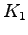 value is wrong) and the other is vertical offset (center-of-mass 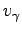 velocity is wrong, although hardly noticeable).
|
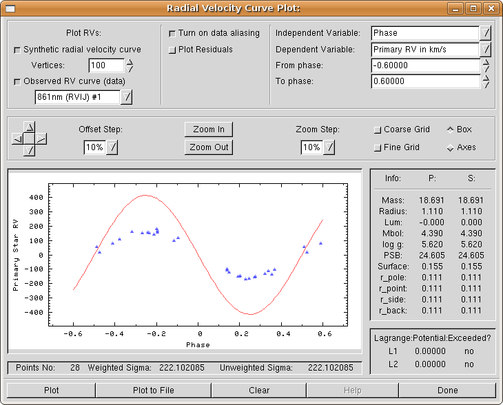
|
Feel free to examine other options of the plotting window. See what is accomplished when different choices are made. Move the plot around, turn the grid on and off, change the coordinate system shape to axes or boxes. Make your PHOEBE session as comfortable as possible. Again, if you wish, you may leave your RV plotting window open or close it by clicking on the Done button.
As you have seen, it doesn't make much sense to plot synthetic solution over experimental data at first. The fit is of course bad and the only thing you should really check at this early stage is that ephemerides for your binary are correct: the period (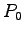) and the the origin of time (
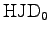). If your binary exhibits a period change (typically seen by smearing you cannot fix by changing or
), you should set that parameter value appropriately.